1.4 หาคอขวด (Bottleneck) และแก้ด้วยเครื่องขนาน
1. หลักการจัดการโลจิสติกส์และซัพพลายเชน · ภาคปฏิบัติ
วัตถุประสงค์การเรียนรู้
- สร้าง / สลับ Frame แสดงชื่อ object และย้าย ลบ แทรก object ใน Frame ได้
- วาง Display และ Chart (Resource Statistics) ด้วยการลาก object มาวาง แล้วอ่านผลได้
- หาคอขวดจากสีใน Chart (Working / Blocked / Waiting) ได้
- แก้คอขวดด้วยการเพิ่มเครื่องขนาน และย้าย ลบ แทรก Object ในไลน์ได้
ต่อจากบท 1.3 — ใช้ไลน์ผลิต 5 สถานี อ่านผลจาก Display และ Chart หาเครื่องที่ช้าที่สุด (คอขวด / Bottleneck) แล้วแก้ด้วยการเพิ่มเครื่องขนาน ทั้งหมด 6 ขั้น ไม่ต้องเขียนโค้ด — ภาพหน้าจอในบทนี้มาจาก Plant Simulation 2606 ขั้นตอนเหมือนกันใน 2504 และตัวเลขทุกตัววัดซ้ำบน 2504 แล้วได้เท่ากัน
ภาพรวม: 6 ขั้น จากไลน์ปกติ ถึงแก้คอขวด
| ลำดับ | หัวข้อ | ทำอะไร | ขั้น |
|---|---|---|---|
| 1 | เปิด Frame Model | ไลน์ 5 สถานี เวลาเท่ากัน 0:10 | 1 |
| 2 | วาง Display + Chart | จาก Toolbox แล้วลาก object มาวาง | 2–3 |
| 3 | รัน Model อ่านผล | FG 355 ทุกแท่งสีเขียว | 4 |
| 4 | Model2 มีคอขวด | Station3 ช้าเป็น 0:20 ได้ 177 | 5 |
| 5 | Model3 เพิ่มเครื่อง | Station32 วางขนาน ได้ 354 | 6 |
Duplicate · ผลผลิตก่อน–หลังแก้คอขวด 177 → 354 ชิ้น/ชม.
(ทุกตัวเลขในบทนี้วัดจริงทั้งใน Plant Simulation 2504 และ 2606 จำลอง 1 ชั่วโมง)
3 Frame เล่าเรื่องเดียวกัน
| ลำดับ | Frame | เรื่อง | ขั้น |
|---|---|---|---|
| 1 | Model | ไลน์สมดุล ทุกเครื่อง 0:10 ได้ 355 ชิ้น/ชม. | 1–4 |
| 2 | Model2 | Station3 ช้าเป็น 0:20 ทั้งไลน์เหลือ 177 ชิ้น/ชม. | 5 |
| 3 | Model3 | เพิ่ม Station32 ขนานกับ Station3 ได้ 354 ชิ้น/ชม. | 6 |
บทนี้ในตัวเลข: 3 Frame · 5 Station ต่อไลน์ · 60 นาทีจำลองต่อการรัน — เรื่องของบทนี้: ไลน์ปกติ → มีเครื่องหนึ่งช้า → แก้ด้วยการเพิ่มเครื่องขนาน
ขั้นที่ 1: Frame Model ไลน์ 5 สถานี
ดับเบิลคลิก Models › Model (ภาพนี้เป็น Planning View ก่อนรัน)
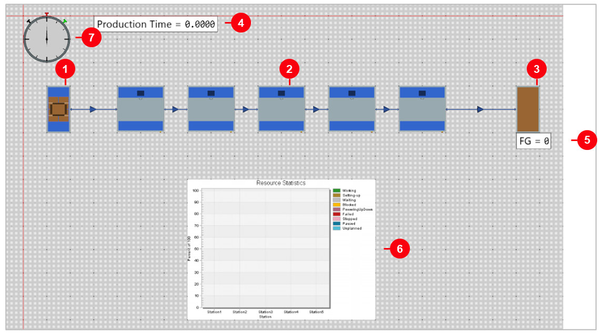
- 1Source — ปล่อยงานทันทีที่ว่าง (Interval 0)
- 2Station1–5 — ทุกเครื่อง 0:10 ต่อชิ้น
- 3Drain — ชิ้นงานที่เสร็จ
- 4Display — Production Time = เวลาจำลอง
- 5Display — FG = จำนวนชิ้นที่เสร็จ
- 6Chart — Resource Statistics สถานะเครื่อง
- 7EventController — End 1:00:00
ขั้นที่ 1: สร้าง Frame ใหม่ และสลับ Frame
Class Library › คลิกขวา Models › New › Model Frame
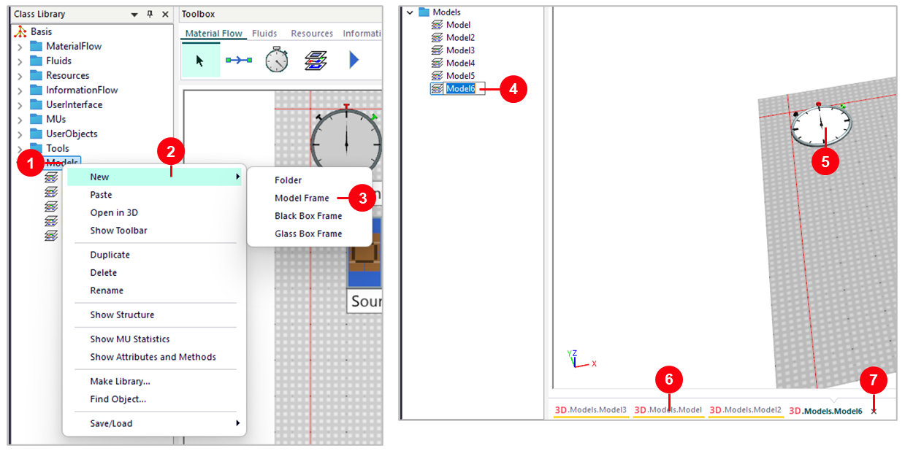
- 1คลิกขวาที่ Models ใน Class Library
- 2
New - 3
Model Frame - 4Model6 — ขึ้นท้ายรายการ พิมพ์ชื่อใหม่ได้ทันที
- 5EventController — Frame ใหม่มีมาให้ 1 ตัว (Frame ใหม่เปิดเป็นมุมมอง 3D)
- 6แท็บด้านล่าง — คลิกเพื่อสลับ Frame
- 7× — ปิด Frame · เปิดใหม่ = ดับเบิลคลิกชื่อใน Class Library
Duplicate ได้ Frame ใหม่พร้อม Object ทุกตัว
แล้วแก้เฉพาะจุดที่ต่าง เช่น Model2ขั้นที่ 1: แสดงชื่อ Object ใน Frame
คลิกขวาที่ Object › Edit 3D Properties › แท็บ Captions
- 1คลิกขวาที่ Station1
- 2
Edit 3D Properties...— หรือคลิกเลือกแล้วกดSpace - 3แท็บ
Captions - 4
Name / Label Activated— คลิกช่องสี่เหลี่ยมด้านหน้าให้ขึ้นเครื่องหมายถูก ☑ = เปิดการแสดงชื่อ - 5
OK— ชื่อขึ้นใต้ Object
ขั้นที่ 1: ทำซ้ำทุก Object แล้วอ่านชื่อได้ทั้งไลน์
- 1EventController — ชื่อขึ้นใต้นาฬิกา
- 2Source — ทำทีละ Object เหมือนขั้นก่อนหน้า
- 3Station1–5 — ชื่อตรงกับใน Class Library และใน Chart
- 4Drain — ชื่อถูกป้าย FG บังอยู่ (วางที่เดียวกัน)
Names ต้องเปิดอยู่ ปุ่มนี้เปิด / ปิดชื่อของทุก Object ใน Frame พร้อมกัน
— ตั้งที่ Object ใน Frame มีผลกับ Object นั้นตัวเดียว ถ้าตั้งที่ Class ใน Class Library ทุก Object ที่สืบทอดมาจะแสดงชื่อด้วยขั้นที่ 2: วาง Display จาก Toolbox
Toolbox › User Interface › Display
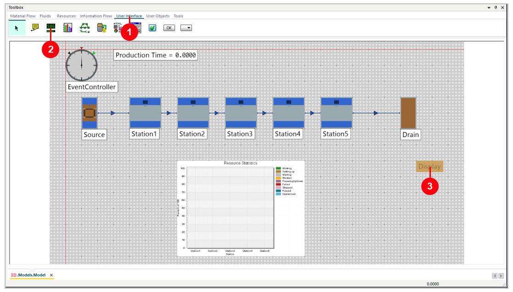
- 1แท็บ User Interface ใน Toolbox
- 2Display — คลิกไอคอน 9.86
- 3คลิกใน Frame — วาง Display ใกล้ Drain
ขั้นที่ 2: ลาก Drain ไปวางบน Display
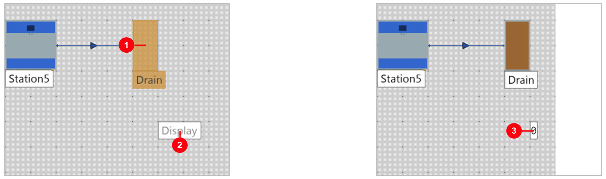
- 1คลิกค้างที่ Drain แล้วลากไป
- 2ปล่อยบน Display — ห้ามปล่อยบนพื้นว่าง ไม่งั้น Drain จะย้ายที่แทน
- 3Display แสดง 0 — Path =
Drain.statNumInตั้งให้เอง = จำนวนชิ้นที่เข้า Drain
ขั้นที่ 2: คลิกขวา Start แล้วอ่านค่า
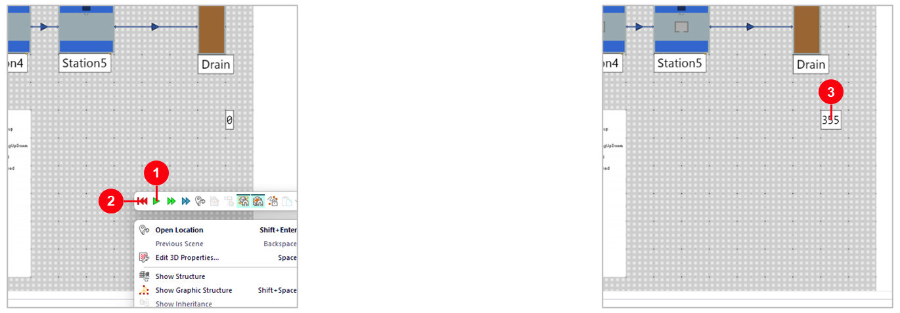
- 1Start/Stop Simulation — ปุ่มเขียวในแถบเครื่องมือที่ขึ้นตอนคลิกขวา
- 2Reset Simulation — ปุ่มแดง กลับไปเริ่มต้น ค่าบน Display กลับเป็น 0
- 3355 — ชิ้นที่เสร็จใน 1 ชั่วโมง อีก 5 ชิ้นยังอยู่ในเครื่อง (Work in Process)
ปุ่ม Start และ Reset เดียวกันนี้อยู่ที่ริบบอน Home › Event Controller ด้วย
ขั้นที่ 2: ข้อความนำหน้า และรูปแบบตัวอักษร
ดับเบิลคลิก Display · แท็บ Data (ซ้าย) · แท็บ Display (ขวา)
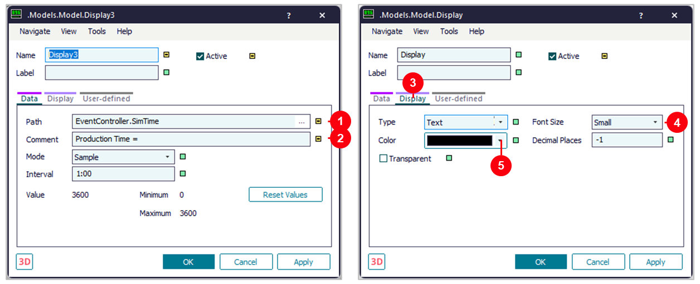
- 1Path — ป้ายเวลา =
EventController.SimTime - 2Comment — ข้อความหน้าตัวเลข เช่น "Production Time =" และ "FG ="
- 3แท็บ Display — รูปแบบของป้าย
- 4Font Size — ขนาดตัวอักษร
- 5Color — สีตัวอักษร แล้วกด
Apply
Drain.statNumIn (ได้มาจากการลาก Drain) และ Comment "FG =" บน Frame จึงขึ้นเป็น FG = 355
(ภาพซ้ายเป็นป้าย Production Time หลังรัน ค่า Value จึงเป็น 3600 วินาที)ขั้นที่ 3: วาง Chart แล้วลาก Station1 มาวาง
Toolbox › User Interface › Chart
- 1แท็บ User Interface
- 2Chart — คลิกไอคอนกราฟแท่ง
- 3คลิกใน Frame — วาง Chart ใต้ไลน์
- 4ลาก Station1 ไปปล่อยบน Chart
- 5Resource Statistics ใน Statistics Type (= สถานะของเครื่อง)
- 6
OK
ขั้นที่ 3: ลาก Station2–5 แล้วเปิด / ปิดหน้าต่าง Chart
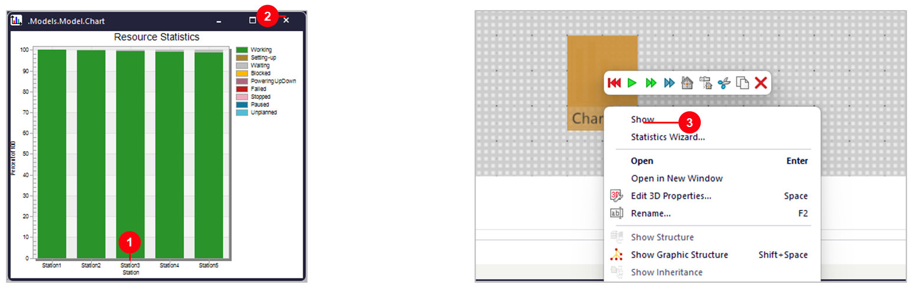
- 1Station1–5 — ลากทีละเครื่องมาปล่อยบน Chart ได้ 5 แท่ง (ครั้งต่อไปไม่ถาม Statistics Type)
- 2ปุ่ม × — ปิดหน้าต่าง Chart
- 3คลิกขวาที่ Chart ›
Show— เปิดหน้าต่างอีกครั้ง
หลังวาง Station แรก หน้าต่าง Chart เปิดขึ้นเอง ภาพซ้ายถ่ายหลังรัน 1 ชั่วโมง ทุกเครื่อง Working เกือบ 100%
ขั้นที่ 3: ค่าของ Chart ที่ตั้งให้
ดับเบิลคลิก Chart › แท็บ Data
- 1Collect Data — ช่องหน้าชื่อมีเครื่องหมายถูก ☑ = เก็บข้อมูลระหว่างรัน
- 2Data Source = Input Channels — แสดงข้อมูลของ object ที่เลือก
- 3ปุ่ม Input Channels — รายการ Station1–5 ที่ลากมาวาง
- 4Mode = Sample, Interval 1:00 — เก็บค่าทุก 1 นาที
ขั้นที่ 3: Chart แบบแบนบน Frame หรือแบบ 3D
แท็บ Display: Model (ซ้าย) · Model2 (ขวา)
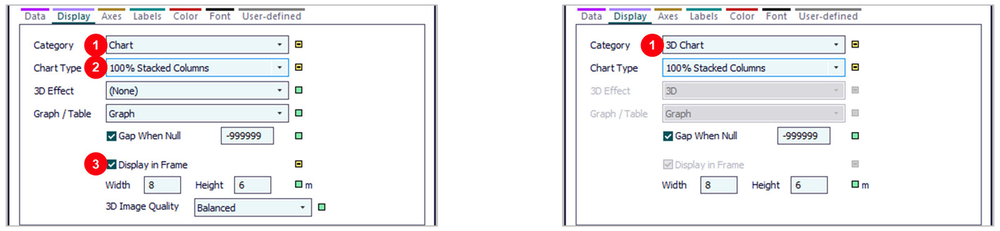
- 1Category —
Chart= กราฟแบนบน Frame (Model) ·3D Chart= ป้ายกราฟตั้งในฉาก 3D (Model2–Model3) - 2Chart Type = 100% Stacked Columns — แท่งละ 100% แบ่งสีตามสถานะ
- 3Display in Frame — ช่องหน้าชื่อมีเครื่องหมายถูก ☑ = แสดงกราฟบน Frame แทนไอคอน
ขั้นที่ 3: ตั้ง 3D Chart ให้ยืนอยู่หลังไลน์
Model2 › Chart: แท็บ Display (ซ้าย) · ปุ่ม 3D › Transformation (ขวา)
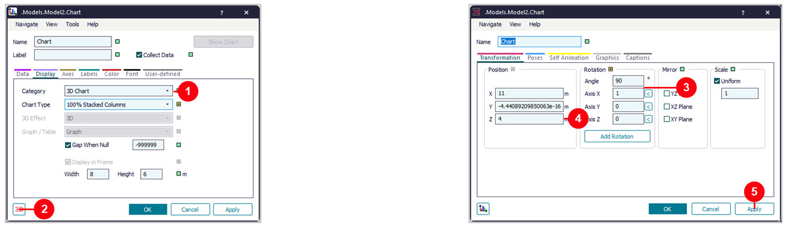
- 1Category = 3D Chart — ช่อง Display in Frame ขึ้นเครื่องหมายถูก ☑ ให้เอง
- 2ปุ่ม 3D มุมซ้ายล่าง — เปิดหน้าต่าง 3D แท็บ Transformation
- 3Rotation: Angle = 90, Axis X = 1 — หมุน 90 องศารอบแกน X แผ่นกราฟจึงตั้งขึ้นจากพื้น
- 4Position Z = 4 m — ยกกราฟขึ้นจากพื้น (X, Y = ตำแหน่งบนพื้น)
- 5
Applyแล้วOK— ดูผลในมุมมอง 3D (ขั้นที่ 5)
ขั้นที่ 4: รัน Model 1 ชั่วโมง แล้วอ่านผล
- 1Production Time = 1:00:00 — ครบเวลาแล้วหยุดเอง
- 2FG = 355 — ชิ้นงานที่เสร็จใน 1 ชั่วโมง
- 3Chart เขียวเต็มทุกแท่ง — ทุกเครื่อง Working ~99–100%
ขั้นที่ 5: Model2 — Station3 ช้ากว่าเพื่อน 2 เท่า
- 1Station3 Processing Time = 0:20 — เครื่องอื่นยัง 0:10
- 2FG = 177 — ทั้งไลน์ได้แค่ครึ่งเดียว
ขั้นที่ 5: 3D Chart บอกว่าเครื่องไหนเป็นคอขวด
Frame Model2 · มุมมอง 3D หลังรัน 1 ชั่วโมง (หมุนกล้องให้มองตรงกราฟ)
- 1Station1–2 สีเหลือง — Blocked ~50% ทำเสร็จแต่ส่งต่อไม่ได้
- 2Station3 เขียวเต็ม — Working ~99% = คอขวด
- 3Station4–5 สีเทา — Waiting ~51% รองานจากเครื่องก่อนหน้า
- 4ชื่อสถานะ — ดูสีจาก legend ด้านขวา
ขั้นที่ 6: ย้าย Object ด้วยเมาส์ และปุ่มลูกศร
Frame Model3 · คลิกเลือก Object แล้วลาก หรือกดปุ่มลูกศร
- 1คลิกค้างที่ Station32 แล้วลาก — Connector หลุดชั่วคราวระหว่างลาก
- 2ปล่อยเมาส์ — Connector ตามไปต่อที่ตำแหน่งใหม่เอง
- 3ขยับทีละนิด — คลิกเลือก Object แล้วกดปุ่มตามตารางด้านล่าง
| ปุ่ม | ผล |
|---|---|
→ ← ↑ ↓ | ย้ายในแนว X / Y ครั้งละ 0.1 m |
Shift + ลูกศร | ย้ายในแนว X / Y ครั้งละ 1 m |
Ctrl + ↑ ↓ | ยกขึ้น / ลง (แกน Z) ครั้งละ 0.1 m · เพิ่ม Shift = 1 m |
Ctrl + → ← | หมุนรอบแกน Z ครั้งละ 1° · เพิ่ม Shift = 45° |
ขั้นที่ 6: ลบ และแทรก Object
คลิกขวา › × · ลาก Object ไปปล่อยบน Connector
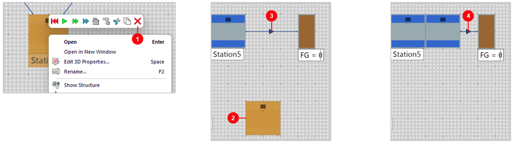
- 1คลิกขวาที่ Object › × — ลบ Object พร้อม Connector ที่ต่ออยู่
- 2วาง Station ใหม่ — จาก Toolbox ในที่ว่าง ยังไม่ต่อเส้น
- 3ลาก Station ไปปล่อยบน Connector — Station5 → Drain
- 4Connector แยกเป็น 2 เส้นเอง — Station5 → Station → Drain
ขั้นที่ 6: Model3 — เพิ่ม Station32 ขนานกับ Station3
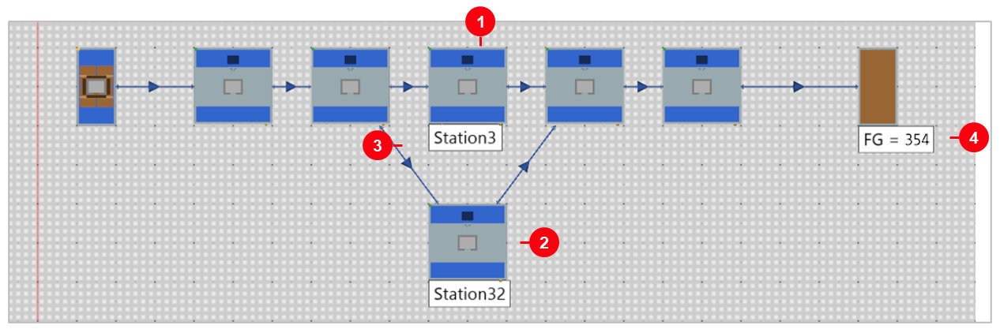
- 1Station3 — 0:20 เหมือนเดิม
- 2Station32 — เครื่องใหม่ 0:20 วางขนานกัน
- 3Connector 8 เส้น — Station2 ส่งไป 2 ทาง (Exit Strategy = Cyclic) แล้วรวมเข้า Station4
- 4FG = 354 — กลับมาเกือบเท่าไลน์สมดุล
ขั้นที่ 6: Chart หลังแก้ ทุกเครื่องทำงานเต็มที่
Frame Model3 · มุมมอง 3D หลังรัน 1 ชั่วโมง
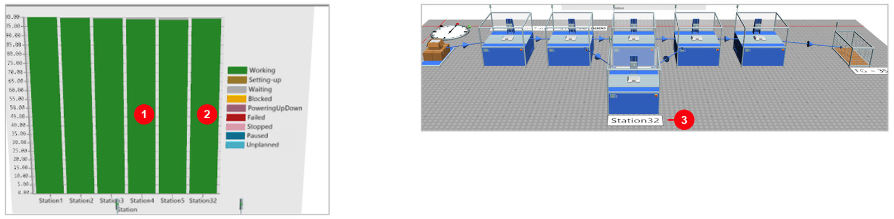
- 1ทุกแท่งสีเขียว — ไม่มีเครื่องถูกบล็อก หรือรองาน
- 2แท่ง Station32 — เครื่องใหม่อยู่ใน Input Channels ของ Chart แล้ว
- 3Station32 — วางหน้า Station3 ในฉาก 3D
สรุป 3 Frame (จำลอง 1 ชั่วโมง)
| Frame | สิ่งที่ต่าง | Connector | FG (ชิ้น/ชม.) | เครื่องจุด Station3 ทำงาน |
|---|---|---|---|---|
Model | ทุกเครื่อง 0:10 | 6 | 355 | ~99% ไลน์สมดุล |
Model2 | Station3 = 0:20 | 6 | 177 | 99% = คอขวด |
Model3 | เพิ่ม Station32 (0:20) ขนานกับ Station3 | 8 | 354 | ~99% ทั้ง 2 เครื่อง |
ทุกตัวเลขวัดจริงทั้งใน Plant Simulation 2504 และ 2606 ได้เท่ากัน
ลองเอง: เปลี่ยนเวลาแล้วดู FG (Model–Model3)
เดาก่อนว่า FG จะเป็นเท่าไร แล้วรันดู
| Frame | ลองเปลี่ยน | FG หลังรัน | ทำไม |
|---|---|---|---|
Model | Station1 = 0:20 | 177 | คอขวดอยู่ต้นไลน์ ผลเท่ากัน |
Model | Station5 = 0:20 | 177 | คอขวดอยู่ท้ายไลน์ ผลก็เท่ากัน |
Model2 | Station3 = 0:15 | 237 | 3600 ÷ 15 = 240 |
Model2 | Station3 = 0:10 | 355 | กลับเป็นไลน์สมดุลเหมือน Model |
Model3 | Station3 และ Station32 = 0:30 | 236 | 2 เครื่อง ÷ 30 วินาที = 15 วินาทีต่อชิ้น |
วัดจริงใน Plant Simulation 2504 (และ 2606 ได้เท่ากัน) แก้ทีละค่าจากค่าเดิม · กด Reset ก่อน Start ทุกครั้ง
ปัญหาที่พบบ่อย และวิธีแก้
| อาการ | วิธีแก้ |
|---|---|
| 3D Chart ว่างหลังรัน | รันด้วยปุ่ม Start แบบมีภาพเคลื่อนไหว 3D Chart จะวาดใหม่ระหว่างรัน |
| Planning View มองไม่เห็น 3D Chart | 3D Chart ตั้งขึ้นในฉาก 3D: ปิด Planning View แล้วหมุนมุมกล้อง |
| Chart ไม่มีแท่งของเครื่องใหม่ | ใส่เครื่องใหม่ (Station32) ใน Input Channels ของ Chart (ลากเครื่องไปปล่อยบน Chart) |
| เพิ่มเครื่องแล้ว FG ไม่เพิ่ม | ตรวจ Connector เข้า–ออกเครื่องใหม่ให้ครบ |
| เพิ่มเครื่องแล้ว FG ยังไม่เพิ่มตามคาด | คอขวดย้ายไปเครื่องอื่นแล้ว ดูสีใน Chart |
| กด Start แล้วผลไม่เริ่มจากศูนย์ | กด Reset (ปุ่มแดง) ก่อน Start ทุกครั้ง |